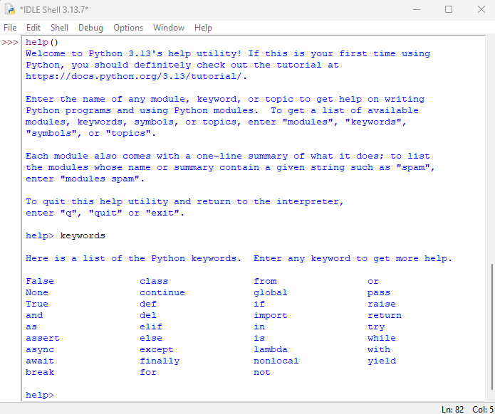
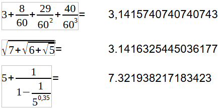
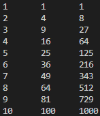

UT 3 Elementos básicos de Python

Sintáxis básica
La sintaxis es a la programación lo que la gramática es a los idiomas. De la misma forma que la frase “Yo estamos aquí” no es correcta ...tampoco lo es un programa con errores de sintaxis, ya que el ordenador no podrá interpretarlo ni ejecutarlo de la manera esperada.
Ejemplo de sintaxis correcta de un programa hecho en Python.
# Definimos una variable x con una cadena
x = "El valor de (a+b)*c es"
# Podemos realizar múltiples asignaciones
a, b, c = 4, 3, 2
# Realizamos unas operaciones con a,b,c
d = (a + b) ** c
# Definimos una variable booleana
imprimir = True
# Si imprimir, print()
if imprimir:
print(x, d)
# Salida: El valor de (a+b)*c es ??
Pregunta
¿Qué realiza el programa anterior?
Elementos de un programa de Python
Un programa de Python es un fichero de texto (codificado en formato UTF-8) que contiene expresiones y sentencias que se consiguen combinando los elementos básicos del lenguaje.
El lenguaje Python está formado por elementos (tokens) de diferentes tipos:
- Lineas y espacios.
- Palabras reservadas (keywords)
- Variables, operadores y expresiones
- Funciones integradas (built-in functions).
- Delimitadores
- Identificadores
Pregunta
Del ejemplo de código anterior, identificar los diferentes elementos constituyentes del programa.
En la documentación de Python se puede consultar una descripción mucho más detallada y completa de los elementos constitutivos del lenguaje Python.
Para que un programa se pueda ejecutar, el programa debe ser sintácticamente correcto, es decir, utilizar los elementos del lenguaje Python respetando su reglas de "ensamblaje".
Líneas y espacios
Básicamente, un programa de Python está formado por líneas de texto.
Se recomienda que cada línea contenga una única instrucción, aunque puede haber varias instrucciones en una línea, separadas por un punto y coma (;).
Los elementos del lenguaje se separan por espacios en blanco (normalmente, uno), aunque en algunos casos no se escriben espacios:
- Entre los nombres de las funciones y el paréntesis
- Antes de una coma (,)
- Entre los delimitadores y su contenido (paréntesis, llaves, corchetes o comillas)
Delimitadores
Los delimitadores son los caracteres que permiten delimitar, separar o representar expresiones.
🔹 1. Paréntesis, corchetes y llaves
- ( ) → agrupar expresiones, llamadas a funciones, tuplas
- [ ] → listas, indexación, slicing
- { } → diccionarios, conjuntos, bloques en f-strings
🔹 2. Separadores de código
- coma ( , ) → separa elementos en listas, tuplas, parámetros de funciones
- 2 puntos ( : ) → define bloques (if, for, def, class, etc.) o pares clave:valor en diccionarios
- punto ( . ) → acceso a atributos y métodos (obj.attr)
- punto y coma ( ; ) → separa varias instrucciones en una misma línea
🔹 3. Delimitadores de cadenas
- Comillas simples: 'texto'
- Comillas dobles: "texto"
- Comillas triples: '''texto''' o """texto""" (también para docstrings y cadenas multilínea)
🔹 4. Delimitadores especiales
- Igual ( = ) → asignación
- Flecha ( -> ) → anotaciones de tipo en funciones (def f(x) -> int:)
- 3 puntos ( ... ) (ellipsis) → marcador especial usado en slicing o como placeholder
Nota:
Los delimitadores no se pueden usar para otra cosa que no sea su uso como delimitador. Cualquier uso indebido generará un error en tiempo de ejecución.
Ejercicio
Escribir un programa que pretenda asignar el valor 64 a una variable de nombre vari@bl&. Comprobar lo que ocurre entonces.
Nota:
Los delimitadores # y “”” “”” permiten insertar comentarios dentro de un programa.
# Esta linea está comentada. El interprete no la ejecutará
#
a = True and False
print("El valor de 'a' es:", a, "y es de tipo: ", type(a))
#
"""
Nada de lo contenido entre las comillas dobles será ejecutado
b = True and True
print("El valor de 'b' es:", b, "y es de tipo: ", type(a))
"""
Ejercicio
En el código del ejemplo anterior encontrar la línea dónde se hace uso a la ver de comillas simples y comillas dobles.
¿Por qué se usa esa sintaxis?
Nota:
El delimitador contrabarra ( \ ) permite truncar una linea muy larga en varias líneas.
Por motivos de legibilidad, se recomienda que las líneas no superen los 79 caracteres. Si una instrucción supera esa longitud, se puede dividir en varias líneas usando la contrabarra ( \ ):
radio = 5
area = 3.14159265358979323846 \
* radio **2
print(area)
texto = "Perdóname, amigo, de la ocasión que te he dado de parecer\
loco como yo, haciéndote caer en el error en que yo he caído\
de que hubo y hay caballeros andantes en el mundo."
print(texto)
Ejercicio
Escribir el programa anterior y comprobar el resultado.
Intentar arreglarlo de forma intuitiva.
Palabras reservadas
Las palabras reservadas de Python son las que forman el núcleo del lenguaje Python y no se pueden usar para nombrar otros elementos (variables, funciones, …).
Se puede acceder al listado de las palabras reservadas desde la ayuda de IDLE (Python 3.11, 64bits).

Ejercicio
Lanzar el interpretador idle (se instala a la vez que python).
Escribir en la terminal help y luego keywords.
Ejercicio
¿Podéis intuir el significado de alguna palabra reservada?
Variables
De forma general, una variable es un espacio de memoria con un nombre asociado que se utiliza para almacenar y manipular datos que pueden cambiar durante la ejecución del programa.
Declaración de variables
Python es un lenguaje de tipado dinámico por lo que no hace falta declarar el tipo de dato que se asignará a una variable. De igual manera una variable puede cambiar de tipo conforme la ejecución del programa (lo que no se considera una buena práctica de programación), por ello, se debe tener cuidado con la sintaxis para definir cada tipo de dato.
Ejercicio
Ampliar el programa anterior dónde se le asignará un nuevo valor a la variable 'b' y se le asignará un valor númerico a 'c'.
Escribir en pantalla (print()) el resultado de la suma de b+c.
Variables de tipo entero (int)
Los enteros son un tipo de dato básico en cualquier lenguaje de programación.
Si se usan enteros de 32 bits el rango a representar es de -2^31 a 2^31–1.
Con 64 bits, el rango es de -2^63 a 2^63–1.
No tenemos que preocuparnos de la codificación de los enteros, ya que Python se encarga de asignar más o menos memoria al número en función de su valor.
Ejercicio
Ampliar el programa anterior para evidenciar la asingación dinámica del tipo de variable en python.
Variables de tipo coma flotante (float)
Las variables de tipo coma flotante (o float) son aquellas que almacenan números reales (es decir, con parte decimal).
Los float se pueden escribir de dos formas:
-
Decimal normal:
-
Notación científica (usando e o E para potencias de 10):
-
Precisión de las variables de tipo flotante.
- Los float en Python son de doble precisión (64 bits, estándar IEEE 754) lo que da ~15–17 cifras decimales de precisión.
- No son exactos en muchos casos por cómo se representan en binario.
# Demostración del problema de precisión con float en Python print("¿La suma de 0.1 y 0.2 es igual a 0.3?", 0.1 + 0.2 == 0.3) print("Valor real de 0.1 + 0.2:", 0.1 + 0.2) # Solución con librería Decimal para cálculo exacto from decimal import Decimal a = Decimal("0.1") b = Decimal("0.2") c = Decimal("0.3") print("Con Decimal:", a + b == c)
Variables de tipo booleano (bool)
Las variables booleanas sólo pueden adoptar dos valores: verdadero (True) o falso (False).
Ejercicio
Ampliar el programa anterior para que compara el tipo resultante de la suma lógica de a y b, y también compare a con la negación de b.
Variables de tipo número complejo
En Python, los números complejos se representan literalmente con el tipo complex.
En python, uUn número complejo tiene la forma: a + bj donde j es la unidad unidad imaginaria (en matemáticas se usa i).
# Forma literal de escribir números complejos
a = 5 + 7j
b = 3 - 4j
c = a + b
print(c)
# Uso de complex para definir números complejos
d = complex(2, 3) # (2+3j)
e = complex(-1, -5) # (-1-5j)
f = d * e
print(d)
Ejercicio
Calcular con papel y boli el resultado de la variable 'f'.
Variables de tipo cadena de caracteres (string)
Es un tipo de dato que contiene símbolos (alfanuméricos). Los strings se definen utilizando comillas dobles o simples.
Ejercicio
Rehacer el programa anterior para que esta vez, las variables de tipo string contengan valores númericos.
Operadores
Los operadores son símbolos que indican al programa que realice una operación específica, como aritmética, comparación, lógica, etc.
---
config:
kanban:
ticketBaseUrl: 'https://org.atlassian.net/browse/#TICKET#'
theme: neo
---
kanban
[Aritméticos]
[Suma: <br> +]
[Multiplicación: <br> *]
[Resta: <br> -]
[División: <br> /]
[Módulo: <br> %]
[Exponente: <br> **]
[División entera: <br> //]
[Comparación]
[Igual que: <br> ==]
[Diferente que: <br> !=]
[Mayor que: <br> >]
[Menor que: <br> <]
[Mayor o igual que: <br> >=]
[Menor o igual que: <br> <=]
[Lógicos]
[and]
[or]
[not]
[Asignación]
[Igual a: <br> =]
[Incremento: <br> +=]
[Decremento: <br> -=]
[Multiplicado por: <br> *=]
[Dividido por: <br> /=]
[Módulo de: <br> %=]
[Exponente de: <br> **=]
[División entera de: <br> //=]
[Pertenecia]
[in]
[not in]
[Identidad]
[is]
[is not]Operadores aritméticos
Los operadores aritméticos permiten realizar operaciones aritméticas básicas con las variables de tipo numérico.
| Operador | Descripción | Ejemplo |
|---|---|---|
| + | Realiza Adición entre los operandos | 12 + 3 = 15 |
| - | Realiza Substracción entre los operandos | 12 - 3 = 9 |
| * | Realiza Multiplicación entre los operandos | 12 * 3 = 36 |
| / | Realiza División entre los operandos | 12 / 3 = 4 |
| % | Realiza un módulo entre los operandos | 16 % 3 = 1 |
| ** | Realiza la potencia de los operandos | 12 ** 3 = 1728 |
| // | Realiza la división con resultado de número entero | 18 // 5 = 3 |
Ejercicio
Escribir la expresión que permita calcular los siguientes valores:

Nota:
Aunque no lo hayamos visto aun, existe una manera más simple de escribir las expresiones. Si usamos la biblioteca math accedemos a todos sus operadores matemáticos (métodos) lo que da más claridad al código.
import math
# Calcular la raíz cuadrada de un valor
a = 4
b = math.sqrt(a)
print(b)
# Calcular el coseno de 60º
c = math.cos(60)
print(c)
Ejercicio
Copiar el código anterior y comprobar los resultados obtenidos.
¿Son los esperados?
¿Qué se debería hacer para que sean correctos?
Operadores de comparación
Permiten efectuar comparaciones entre objetos de Python.
El resultado de una comparación es un valor booleano (True o False).
| Operador | Descripción | Ejemplo |
|---|---|---|
| > | Devuelve True si el operador de la izquierda es mayor que el operador de la derecha | 12 > 3 devuelve True |
| < | Devuelve True si el operador de la derecha es mayor que el operador de la izquierda | 12 < 3 devuelve False |
| == | Devuelve True si ambos operandos son iguales | 12 == 3 devuelve False |
| >= | Devuelve True si el operador de la izquierda es mayor o igual que el operador de la derecha | 12 >= 3 devuelve True |
| <= | Devuelve True si el operador de la derecha es mayor o igual que el operador de la izquierda | 12 <= 3 devuelve False |
| != | Devuelve True si ambos operandos no son iguales | 12 != 3 devuelve True |
Nota: Los operadores relacionales solo se pueden ejecutar para comparar valores del mismo tipo.
- "a" > 10 devolverá un error.
- [0,4] < (1,2) devolverá un error al no poder comparar una lista con una tupla.
- También se pueden concatenar: 3 == 3 >= 2 (true)
Ejercicio
Transcribir a python las expresiones que acabamos de ver.
Operadores lógicos
Sirven para realizar operaciones de lógica booleana entre valores de tipo bool. Los operadores lógicos son (las palabras reservadas) and, or y not.
| Operador | Descripción | Ejemplo |
|---|---|---|
| and | Verdadero si ambas condiciones son True | True and False → False |
| or | Verdadero si al menos una condición es True | True or False → True |
| not | Invierte el valor de la condición | not True → False |
Nota:
Cuidado con la sintaxis. Si usamos los símbolos de la lógica combinatoria (+, *, ...) los resultados pueden no ser los esperados.
Operadores de asignación
Un operador de asignación sirve para asignar un valor a una variable. Generalmente se combina con otros operadores (aritmética, bit a bit, ...) donde la operación se realiza en los operandos y el resultado se asigna al operando izquierdo.
| Operador | Descripción |
|---|---|
| = | a = 5. El valor 5 es asignado a la variable a |
| += | a += 5 es equivalente a a = a + 5 |
| -= | a -= 5 es equivalente a a = a - 5 |
| *= | a *= 3 es equivalente a a = a * 3 |
| /= | a /= 3 es equivalente a a = a / 3 |
| %= | a %= 3 es equivalente a a = a % 3 |
| **= | a **= 3 es equivalente a a = a ** 3 |
| //= | a //= 3 es equivalente a a = a // 3 |
Operadores de pertenencia
Un operador de pertenencia se emplea para identificar pertenencia en alguna secuencia (listas, strings, tuplas).
- in y not in son operadores de pertenencia.
- in → devuelve True si el valor especificado se encuentra en la secuencia. En caso contrario devuelve False.
- not in → devuelve True si el valor especificado no se encuentra en la secuencia. En caso contrario devuelve False.
Ejemplos de expresiones que usan operadores de pertenencia.
a = [1,2,3,4,5]
# ¿Está 3 en la lista a?
print(3 in a) # Muestra True
# ¿No está 12 en la lista a?
print(12 not in a) # Muestra True
str = "Hello World"
# ¿Contiene World el string str?
print("World" in str) # Muestra True
# ¿Contiene world el string str? (nota: distingue mayúsculas y minúsculas)
print("world" in str) # Muestra False
print("code" not in str) # Muestra True
Operadores de identidad
Un operador de identidad se emplea para comprobar si dos variables emplean la misma ubicación en memoria.
- is → comprueba si dos variables hacen referencia al mismo objeto en memoria.
- is not → lo contrario, comprueba si no son el mismo objeto.
a = [1, 2, 3]
b = a
c = [1, 2, 3]
print(a is b) # True, porque b apunta al mismo objeto que a
print(a is c) # False, aunque tengan el mismo contenido, son objetos distintos
print(a == c) # True, porque los valores dentro de la lista son iguales
print(a is not c) # True, porque no son el mismo objeto (las listas son objetos mutables)
🔎 Importante:
- is no se debe usar para comparar valores, solo para identidad de objetos.
- Para comparar valores, siempre se usará ==.
Ejercicios con operadores
FALTA
Estructuras de control
Un código es una secuencia de instrucciones, que por norma general son ejecutadas una tras otra.
Sin embargo, en muchas ocasiones no basta con ejecutar las instrucciones una tras otra desde el principio hasta llegar al final. Puede ser que ciertas instrucciones se tengan que ejecutar si y sólo si se cumple una determinada condición.

En un lenguaje de programación, las estructuras de control permiten modificar el flujo de ejecución de un conjunto de instrucciones. Los tipos más comunes son:
| Elemento | Tipo |
|---|---|
| if, elif, else | Estructura condicionales |
| for | Bucle (o iteración) |
| while | Bucle (o iteración) |
| try-except | Manejo de excepciones(errores) |
Bucle condicional if-elif-else
- La estructura de control if permite que un programa ejecute unas instrucciones cuando se cumpla una condición.
Ejercicio
Realizar un programa con un bucle condicional if que haga lo siguiente:
1. El programa evaluará la nota de un alumno
2. Si la nota es superior o igual a 5, se mostrará por terminal el texto: "Enhorabuena, has aprobado el examen".
3. ¿De qué manera podriamos sacar por terminal un mensaje de "Lamentablemente, no has aprobado el examen" si el alumno saca una nota inferior a 5?
4. ¿Cuál es la función del placeholder pass?
- La estructura de control if else permite que un programa ejecute unas instrucciones cuando se cumple una condición y otras instrucciones cuando no se cumple esa condición.
Ejercicio
Realizar un programa con un bucle condicional if else que haga lo siguiente:
1. El programa evaluará la nota de un alumno.
2. Si la nota es superior o igual a 5, se mostrará por terminal el texto: "Enhorabuena, has aprobado el examen".
3. Si la mota es inferior a 5, se mostrará por terminal el texto: "Lamentablemente, no has aprobado el examen".
- La estructura de control if elif else permite encadenar varias condiciones (elif es una contracción de else if).
Ejercicio
Realizar un programa con un bucle condicional if elif else que haga lo siguiente:
1. El programa evaluará la nota de un alumno.
2. Si la nota es superior o igual a 5 e inferior a 7, se mostrará por terminal el texto: "Has aprobado el examen".
3. Si la nota es superior o igual a 7, se mostrará por terminal el texto: "Excelente examen"
4. Si la mota es inferior a 5, se mostrará por terminal el texto: "Lamentablemente, no has aprobado el examen".
Ejercicio
Realizar un programa con un bucle condicional if elif else que haga lo siguiente:
1. El programa evaluará la nota de un alumno. Esa nota deberá estar comprendida entre 0 y 100. Si la nota está fuera de rango se mostrará en la terminal "La calificación debe estar en la escala de 0 a 100"
2. Si la nota es superior o igual a 70 e inferior o igual a 74, se mostrará por terminal el texto: "Regular".
3. Si la nota es superior o igual a 75 e inferior o igual a 84, se mostrará por terminal el texto: "Bien".
4. Si la nota es superior o igual a 85 e inferior o igual a 94, se mostrará por terminal el texto: "Muy bien".
5. Si la nota es superior o igual a 95 e inferior o igual a 100, se mostrará por terminal el texto: "Excelente".
6. Si no se cumple ninguna de esas condiciones, mostraremos en la terminal: "Insuficiente".
Ejercicio
- Supongamos que tenemos una lista de nota: lista = [1,2,4,7,9].
- Supongamos que tenemos la nota = 8 y queremos saber si algun alumno ha sacado esa nota.
- Realizar un programa con un bucle condicional if else que permita saber si el valor de nota está incluido dentro de lista.
Bucle de repetición for
El bucle for es una estructura de control de repetición, en la cual se conocen (a priori) el número de iteraciones a realizar. El bucle for usa un iterable que define las veces que se ejecutará el código.
Iterador range()
range() es una función que devuelve un iterador de números enteros en un rango definido.
- inicio → número desde el que empieza (por defecto 0).
- fin → número donde se detiene (⚠️ no se incluye).
- paso → incremento entre números (por defecto 1).
Ejemplos
- Recorrer un rango simple (0 a 4):
- Rango con inicio y fin:
- Rango con paso:
- Contar hacia atrás (paso negativo):
Ejercicio
Ejecutar los bucles for y comprobar los resultados obtenidos.
Ejercicio
Realizar un programa que determine: 1. Cuantos números entre 1 y 500 son, a la vez, múltiplos de 7 y 8. 2. Muestre los números encontrados.
Objetos iteradores
En Python se puede iterar prácticamente sobre cualquier objeto iterable, como por ejemplo un string, una lista, una tupla o un diccionario... A continuación varios ejemplos de objetos iterables.
-
Bucle for sobre variable numérica.
-
Bucle for sobre lista de valores. Para realizar la iteración se toma la cantidad de valores de la lista.
- Otra forma de iterar sobre una lista.
- Otra forma de iterar sobre las propiedades de una lista.
- También se puede iterar sobre varios iterables a la vez usando la función zip()
zip(), como su nombre lo deja entrever une los elementos de las listas, posición a posición.
nombres = ["Ana", "Luis", "Marta"] edades = [25, 30, 22] for nombre, edad in zip(nombres, edades): print(nombre, "tiene", edad, "años")
Si una lista es más larga que la otra, zip se detiene en la más corta.
Bucle de repetición while
El bucle while ejecuta un bloque de instrucciones mientras se cumpla una condición. A diferencia del bucle for, en el while normalmente no sabemos de entrada cuántas veces se va a repetir."
En el siguiente ejemplo, vemos cómo el bucle se repite hasta que la variable auto-incrementable k alcanza la longitud de la cadena (string) nombre.
Sentencias de control de flujo: break y continue
Sentencia break
La sentencia break permite alterar el comportamiento de los bucles while y for. Concretamente, permite terminar de manera anticipada con la ejecución del bucle.
-
Break en un bucle for:
-
Break en un bucle while:
from random import randint print("¡Bienvenido al juego: 'Adivina el número'") numero = randint(1,10) # genera un entero entre 1 y 10 intentos = 1 # inicializamos la variable incrementable while True: #definimos un bucle while infinito valor = int(input("Introducir un número entero entre 1 y 10: ")) if valor == numero: print(f"Has adivinado el número correcto {numero} después de {intentos} intentos") break else: print(f"{valor} no es el numero correcto, intentalo nuevamente\n") intentos += 1
Sentencia continue
Al igual que break, la sentencia continue permite modificar el comportamiento de los bucles while y for.
En el caso de continue, se salta todo el código restante en la iteración actual y vuelve al principio en el caso de que aún queden iteraciones por completar.
La diferencia entre break y continue es que continue no rompe el bucle, sino que pasa a la siguiente iteración saltando el código pendiente.
En este ejemplo podemos ver que cuando el programa encuentra la letra a, no se imprime por consola. No obstante el bucle no se interrumpe y continua hasta completar todas las letras.
cadena = "Python es mi lenguaje de programacion favorito"
letra_a_eliminar = "a"
for letra in cadena:
if letra == letra_a_eliminar:
continue
print(letra, end="") #end="" evita el salto de línea
Sentencia de control try-except
Las sentencias de control try y except se usan para manejar errores (más comúnmente llamados excepciones) y evitar que nuestro programa se detenga inesperadamente. 🔹 Concepto básico. - El bloque try contiene el código que podría generar un error. - El bloque except contiene el código que se ejecuta si ocurre un error dentro del try. Esto permite “atrapar” errores y manejarlos de forma controlada. 🔹 Ejemplo sin especificar la excepción.
while True:
entrada = input("Introduce un número (o 'salir' para terminar): ")
if entrada.lower() == "salir": # comprueba si el usuario quiere salir
print("Programa terminado.")
break
try:
numero = int(entrada)
resultado = 10 / numero
print("El resultado es:", resultado)
except ValueError: # detecta si se no ha introducido un valor numerico
print("¡Eso no es un valor numérico!")
except ZeroDivisionError: # detecta si se intenta dividir por '0'
print("Estás intentando dividir por cero.")
Bucle anidados.
Ya hemos visto algún que otro bucle anidado sin decirlo. Un bucle anidado es un bucle que se encuentra incluido en el bloque de sentencias de otro bloque.
Los bucles pueden tener muchos niveles de anidamiento, lo que suele disparar resultados inesperados en tiempos de ejecución. De igual manera se deberá prestar una especial atención a la ubicación de las sentencias break y continue.
print("Tabla de multiplicación hasta 10")
input("Pulsar enter para continuar")
for i in range(1, 11): # bucle externo
print("Tabla del: ", i)
for j in range(1, 11): # bucle interno
print(i, "x", "j", "=", i*j)
Ejercicio 1
Modificar el programa anterior para que, al alcanzar el bucle interno el valor 7, este omita ese valor y continue el bucle sobre los valores restantes.
Ejercicio 2
Modificar el programa anterior para que, al alcanzar el bucle externo el valor 5 y el bucle interno el valor 7, se salga de la ejecución del programa con un mensaje de despedida.
¿Por qué incluir un mensaje de despedida?
Funciones de entrada y salida.
Hasta ahora hemos usado la función print() principalmente para mostrar mensajes en pantalla, sin detenernos demasiado en todas las cosas que podemos hacer con ella. Pero, a medida que aprendemos más de Python, necesitamos crear programas más completos que puedan interactuar con el usuario. Para lograrlo, conoceremos también la función input(), que nos servirá para pedir datos por teclado y guardarlos en variables que después usaremos en nuestros programas.
La función print()
La función print() es una función incorporada (builtin) de Python que escribe texto en un flujo (por defecto, la consola) y no devuelve nada.
Sintaxis de print()
Dónde:- *objects: cualquier número de valores a imprimir. Cada uno se convierte con str().
- sep: separador entre objetos (por defecto un espacio).
- end: lo que se añade al final (por defecto salto de línea).
- file: flujo destino; por defecto sys.stdout (puedes usar sys.stderr o un archivo abierto).
- flush: si True, vacia el buffer inmediatamente.
Atención
Las funciones se diferencian en lo que hacen después de ejecutarse.
- Funciones que devuelven algo: realizan una tarea y entregan un resultado usando la palabra clave return. Ese valor puede guardarse en una variable o usarse en otros cálculos.
- Funciones que no devuelven nada: realizan una acción (por ejemplo, mostrar un mensaje en pantalla), pero no entregan ningún valor; su resultado no puede almacenarse ni usarse más adelante.
Argumentos de print()
- Separadores
En python se puede configurar como aparecerán los datos en la terminal.
print("A", "B", "C") print("A", "B", "C", sep="") # sin separacion entre los datos print("A", "B", "C", sep=" ") # sep=" " es el valor por defecto print("A", "B", "C", sep=",") print("A", "B", "C", sep=" >>> ") print("A", "B", "C", sep=" \U0001F600 ") # sep admite símbolos soportados por python - Fin de línea \n
En Python, el valor predeterminado de end es \n (salto de línea).
Si el valor no es nulo, entonces se imprimirá al final de la línea el contenido de end y no se saltará a la linea siguiente si no añadimos \n.print("No saltamos de linea.", end="") print(" Este contenido sigue en la primera linea.") print("\nSaltamos una linea ANTES Y DESPUES de pintar el texto.\n") print("Ponemos un final de linea personalizado y no saltamos de linea.", end="...") print(" Este texto sigue en la linea anterior") print("Final de linea personalizado CON salto de linea", end="... \n") print("Final de linea con caracteres especiales", end=" ✅\n") - Tabulación \t
El simbolo \t debe incorporarse al texto que queremos tabular.print("Menu del dia") print("\tPrimer plato.") print("\tSegundo plato.") print("\t Postre.") print("-------------------------") print("---\tPrecio\tFinal.") -
Retroceso \r
A la inversa de tabulación el símbolo \r permite realizar retrocesos a inicio de línea.Peligro
El retroceso \r sobreescribe los datos.
print("Menu del dia") print("Primer plato.") print("Segundo plato.", end="") print("\r-sobreescribo-")
-
Escribir variables, texto y ejecutar código
Como ya hemos visto, la función print() permite combinar texto (siempre entre comillas), mostrar valores de variables y ejecutar código.
Ejecución de funciones básicas de python.
Ejecución de código
Ejercicios con print()
Ejercicio 1
Escribir un código cuya salida en terminal sea la siguiente.

Formato de cadenas de caracteres para su uso con (o sin) print()
-
Cadenas f
Muchas veces puede resultar tiedoso ir intercalando texto y valores de variables. A partir de python 3.6, la nueva notación cadena f{} soluciona es problema.
Una cadena f contiene variables y expresiones entre llaves "{}" que se sustituyen directamente por su valor.valor1 = 5 valor2 = 7 valor3 = 35 texto = "euros" texto1 = "Pablo" # sin cadenas f print("El resultado de la mutiplicacion de",valor1,"por",valor2,"es",valor3,texto) # con cadenas f print(f"El resultado de la mutiplicacion de {valor1} por {valor2} es {valor3} {texto}") # Tambien se ejecutan funciones dentro de f print(f"El resultado de la mutiplicacion de {valor1} por {valor2} es {valor1*valor2} {texto}") # Tambien se ejecuta código dentro de f print(f"El resultado del examen de {texto1} cuya nota el {valor2} es {"Aprobado" if valor2 >= 5 else "Suspenso"}") -
format() Otra manera de dar formato a cadenas de carácteres puede hacerse usando el método format()
Formato de valores para su uso con (o sin) print()
También podemos dar formato a los valores. Esta posibilidad resulta particularme útil cuando la usamos con print() ya que podemos controlar cómo se ven los números, cadenas o fechas (decimales, ancho, alineación, relleno, etc.).
- Decimales y números:
# con cadenas f hexa = 255 print(f"Representacion en hexadecimal de 255: {hexa :X}") # con format print("Representacion en hexadecimal de 255: {:X}".format(255)) - Mostrar con ceros a la izquierda:
- Separador de miles:
- Hexadecimal, binario, porcentaje:
print("Representacion en hexadecimal de 255: {:X}".format(255)) print("Representacion en binario de 8: {:b}".format(8)) print("Equivalente en porcentaje de 0.85: {:.1%}".format(0.85))
Ejercicios
Ejercicio 1
De los ejemplos anteriores, escribir el código para que, en vez de format, se usen cadenas f.
Ejercicio 2
Adaptar el siguiente código para que la salida por terminal solo muestre 2 decimales.
La función input()
La entrada de datos en Python se realiza con la función input()
Donde texto es el mensaje que se muestra al usuario en la terminal y valor es la variable en la cual se almacena lo que el usuario ha escrito después de pulsar la tecla Enter.
Ejemplo:
Hay una consideración a tener en cuenta al momento de usar input(): La función input solo devuelve cadenas de caracteres.
En el siguiente programa vemos que, independientemente de los valores introducidos, el tipo de las variables siempre es de tipo string.
# definimos una variable de tipo lista
datos = []
# Usamos un iterador para llenar la lista
for i in range(5):
dato = input("Introducir cualquier cosa: ")
datos.append(dato)
# Usamos otro iterador para leer la lista y sacamos el tipo de variable que contiene
for i in range(5):
# print(f"Posición {i}, valor {datos[i]}, tipo {type(datos[i])}")
print(f"Posición {i}, valor {datos[i]}, tipo: {'string' if isinstance(datos[i],str) else ''}")
Si decidimos sumar los valores almacenados dentro de un varaible inicializadas con input(), obtendremos lo siguiente:
dato1 = input("Introducor un valor: ")
dato2 = input("Introducor un valor: ")
dato3 = input("Introducor un valor: ")
print(f"La suma de {dato1} + {dato2} + {dato3} es: {dato1+dato2+dato3}")
Si queremos introducir un valor de tipo numérico y realizar operaciones con él, entonces, deberemos convertir el string a un tipo numérico de manera explícita, de lo contrario el programa podría lanzar un error, o en el mejor de los casos, funcionar de manera incorrecta.
El proceso de convertir el tipo de una variable a otro se llama casting de variables.
Refundición (casting) de variables:
Hacer un cast o casting significa convertir un tipo de dato a otro.
Para hacer un casting, simplemente envolveremos la variable con el tipo de dato al que deseamos convertirla.
Ejemplo de casting sobre una variable de input:
Pregunta
¿Qué ocurre sin introducimos un valor decimal en el ejemplo anterior?
Es necesario recordar que la asignación de la variables es dinámica, es decir que el interprete de Python decide en cada momento el tipo de los datos que contiene una variable. Eso nos lleva a distinguir 2 tipos de conversiones.
- Conversión implícita: Es realizada automáticamente por Python. Sucede cuando se realizan operaciones con dos tipos distintos.
- Conversión explícita: Es realizada expresamente por el programador (convertir un string a int).
Nota importante: Solo se puede hacer casting de variables solamente entre tipos compatibles.
Convertir string a entero
cadena1 = "10"
cadena2 = "20"
valor1 = int(cadena1)
valor2 = int(cadena2)
print("sin casting", cadena1+cadena2)
print("con casting", valor1+valor2)
Convertir string a flotante
cadena1 = "10.125"
valor1 = float(cadena1)
print("sin casting", type(cadena1))
print("con casting", type(float(valor1)))
Convertir a booleano
Otros tipos de conversiones
También se puede hacer conversiones sobre objetos como las listas, tuplas, diccionarios y sets pero no hablaremos, de momento, de ellos ya que aún no los hemos visto.
Tabla resumen de refundiciones
| Tipo de destino | Ejemplo de conversión | Resultado | Notas |
|---|---|---|---|
| int | int("10") |
10 |
Convierte strings numéricos o floats (trunca decimales). No funciona con strings no numéricos. |
| float | float("10.5") |
10.5 |
Convierte strings numéricos y enteros. |
| str | str(100) |
"100" |
Convierte cualquier tipo a string. |
| bool | bool(0) |
False |
0, 0.0, "", [], {} → False; resto → True |
| list | list((1,2,3)) |
[1,2,3] |
Convierte tuplas, sets o strings en listas de elementos. |
| tuple | tuple([1,2,3]) |
(1,2,3) |
Convierte listas, sets o strings en tuplas. |
| set | set([1,2,2,3]) |
{1,2,3} |
Convierte listas, tuplas o strings en conjuntos eliminando duplicados. |
| dict | dict([("a",1),("b",2)]) |
{"a":1,"b":2} |
Convierte listas o tuplas de pares clave-valor en diccionarios. |
HASTA AQUI
https://jorgedelossantos.github.io/apuntes-python/Funciones.html
https://www.learnpython.org/en/Input_and_Output https://docs.python.org/es/3/tutorial/inputoutput.html#the-string-format-method
https://arturoblasco.github.io/prg/ut01/actividades/ut01ac1f/
https://ellibrodepython.com/
IA BD PIA UT 2. ... pagina 37.
Progreso / sobrescribir línea
Con \r vuelves al inicio de la línea: for i in range(1, 6): print(f"\rPaso {i}/5", end="", flush=True) print("\nHecho")
Mini-recetas útiles 1) Tabla rápida con separador print("id", "nombre", "nota", sep="\t") print(1, "Ana", 9.1, sep="\t")
2) Formato con f-strings user, score = "ana", 9.1 print(f"Usuario {user!r} → nota: {score:.2f}")
4) Impresión condicional compacta aprobado = 7.2 print("Aprobado" if aprobado >= 5 else "Suspenso")
5) Desempeño al imprimir listas grandes nums = list(range(10_000)) print(*nums, sep="\n") # una llamada en vez de 10k prints